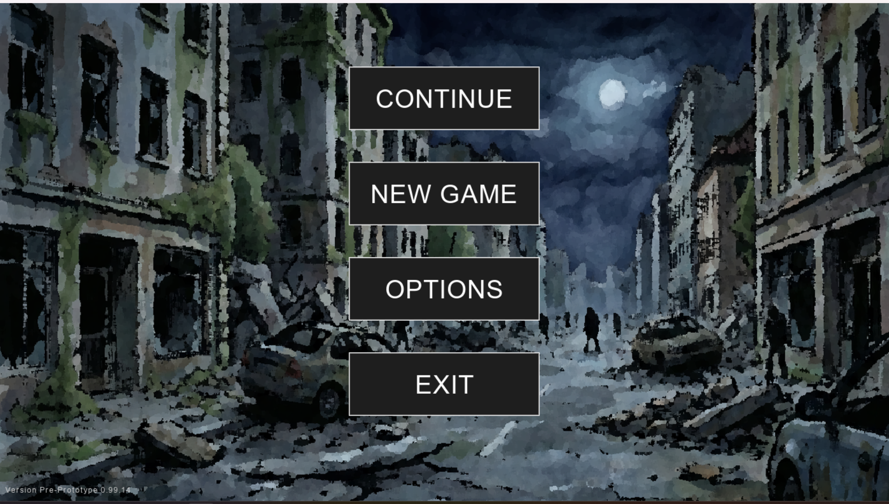
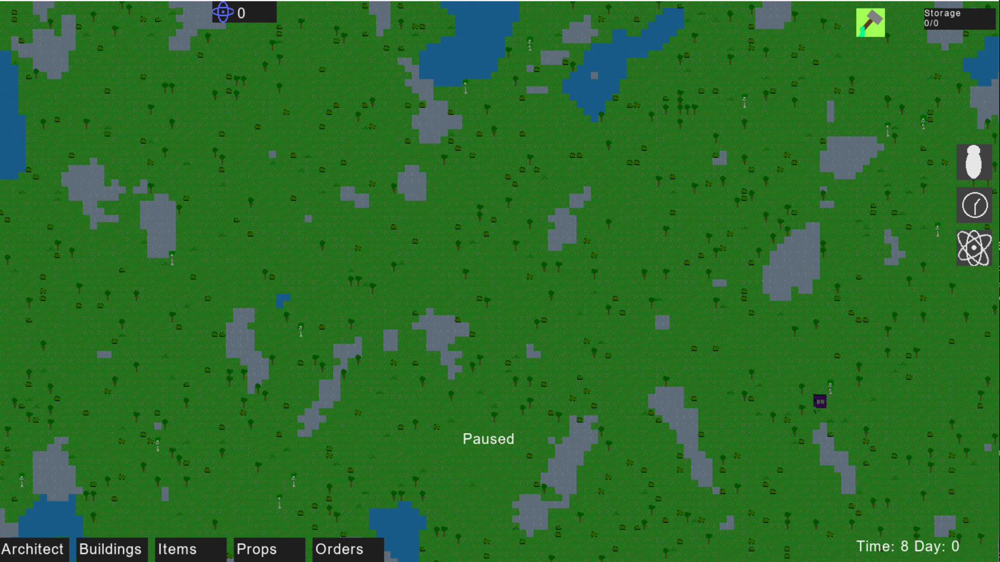
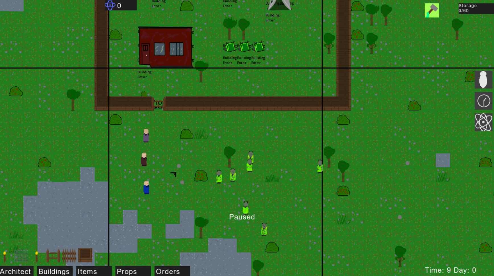

Colony Sim
Gra podobna do Rimworld polegająca na budowaniu bazy w świecie apokalipsy zombie.
Główne Aspekty
- Używanie płaskiego renderowania dostępnego we frameworku do szybkiego rysowania mapy
- Używanie podziału chunkowego dostępnego we frameworku do zmniejszenia obłożenia obliczeniowego na tylko małe części mapy
- Wsparcie dla modowalności poprzez zdefiniowanie większości składowych w JSON
- Wsparcie dla własnych tłumaczeń językowych poprzez zewnętrzne wczytywanie tłumaczeń
- Pokazanie uniwersalności systemu GUI (Całe GUI gry jest oparte na frameworku)
- Pathfinding postaci wywoływany w osobnym wątku w relatywnie bezpieczny sposób
- Osobna scena menu głównego i gry pokazująca łatwość przełączania scen jaką oferuje framework
- Możliwość odpalenia okna w wielu rozdzielczościach w tym w trybie pełnoekranowym, pokazuje to, że renderer dobrze radzi sobie ze skalowaniem okien
- Bezpieczne zapisywanie całego stanu mapy, postaci, wydarzeń do pliku i późniejsze ich odczytywanie
- Obsługa dźwięków środowiskowych mapy dzięki menadżerowi dźwięków
- Dynamiczny system entity reagujący na cykl dnia i nocy
- Dynamiczne środowisko w tym rośnięcie roślin, pojawianie się zwierząt


